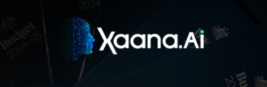
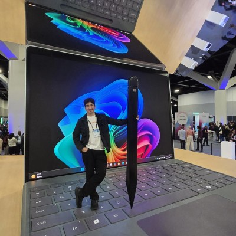
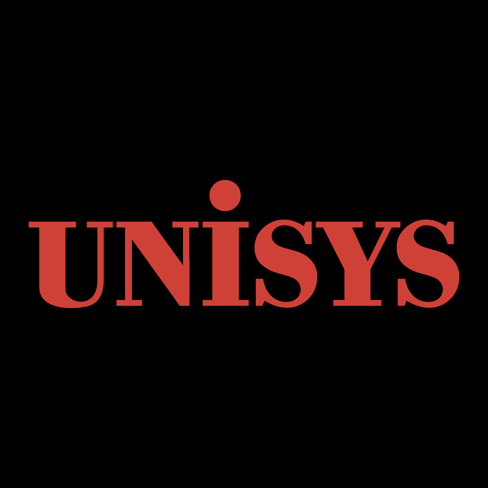

Xaana AI - AI Engineer


Experience





Skills
Built to evolve over time. Categories are modular, so adding or removing tools only requires editing one card block.
Designing robust AI systems from data ingestion and OCR to deployment and monitoring.
Shipping maintainable backend and frontend systems with strong API and deployment discipline.
Building integrated systems where hardware and software work together under real constraints.
Operational tools used to deploy, automate, monitor, and maintain engineering systems.
Projects
Built production OCR pipelines with model fallbacks, document classification, and structured data export.
Key tools: PyTorch, PaddleOCR, Python, Docker
View Details
Co-designed assistive robotic mechanisms and validated motion control for repeatable patient exercises.
Key tools: Fusion 360, MATLAB, Embedded Sensors
View DetailsAutomated provisioning and patch workflows for secure enterprise environments with audit-friendly reporting.
Key tools: SCCM, PowerShell, Active Directory, SQL
View Details
Built and tested sensor telemetry pipelines for a rover concept, from data capture to remote monitoring.
Key tools: Raspberry Pi, Python, Fusion 360
View DetailsDeveloped a lightweight vision model to detect missing safety gear in workshop settings in near real time.
Key tools: OpenCV, PyTorch, Flask, Vercel
View Details
Created an IoT stack for environmental sensing with cloud sync, alerting, and a mobile friendly dashboard.
Key tools: Arduino, Supabase, JavaScript, REST API
View Details
Built an Android app that verifies attendance through Bluetooth proximity and stores encrypted logs.
Key tools: Kotlin, SQLite, Bluetooth LE
View DetailsLed the build of portable kits used to teach robotics fundamentals in community STEM workshops.
Key tools: Arduino, CAD, Python, Documentation
View DetailsNo projects match this filter yet.
About
I am an engineer who enjoys turning uncertainty into workable systems. I value clarity, reliability, and thoughtful execution. My best work sits at the intersection of software, hardware, and human impact.
I prefer projects where I can own the full loop: understand the problem, build a prototype, test in real conditions, and refine until it becomes useful.
I want to grow into a systems engineer who leads multidisciplinary products in AI, robotics, aerospace, and medical technology. The long term goal is to build meaningful systems that improve safety, access, and public impact.
I am especially interested in projects that combine machine intelligence with reliable hardware for high-stakes real world environments.